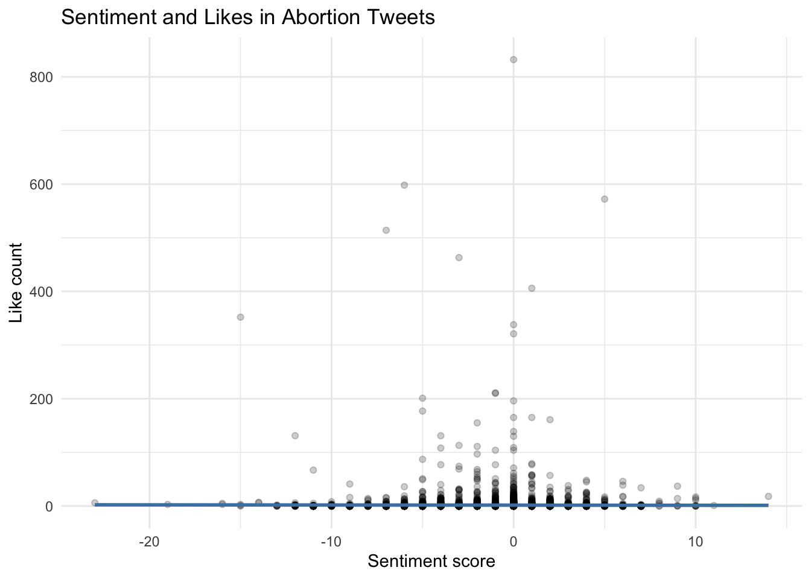

7. Sentiment analysis
Learning goals
By the end of this tutorial, you will be able to:
- Understand what dictionary-based sentiment analysis is and when it is useful.
- Preprocess social media text for sentiment analysis in R.
- Apply the AFINN lexicon to estimate tweet-level sentiment.
- Summarize and interpret sentiment scores across tweets.
- Explore whether sentiment is associated with engagement metrics.
Introduction to Sentiment Analysis
Sentiment analysis is a computational method used to identify the emotional tone of text. In communication research, it is often used to classify text as positive, negative, or neutral, or to estimate emotional intensity using predefined dictionaries.
In this tutorial, we use a dictionary-based approach to analyze sentiment in Twitter data containing the keyword “abortion” from June 24, 2022, to December 31, 2022.
Because social media text is unstructured, the first step is always cleaning and preprocessing the data. This helps reduce noise and improves the clarity of the analysis.
Since this dataset was collected when the platform was still called Twitter, I refer to it as Twitter rather than X in this tutorial.
As of February 2023, Twitter (now X) no longer provides free API access. If you need social media data for practice, you may want to explore public archives such as:
Required Packages
You only need to install packages once.
Importing data
For this tutorial, we use a CSV file containing abortion-related Twitter data.
tweets <- read.csv("~/Desktop/abortion_tweets.csv", header = TRUE, sep = ",")
tweets_subset <- tweets %>%
select(
id,
author_id,
created_at,
text,
public_metrics.impression_count,
public_metrics.like_count,
public_metrics.quote_count,
public_metrics.reply_count,
public_metrics.retweet_count,
referenced_tweets
)Part 1: Preprocessing Text
Step 1: Tokenize the text
To prepare the tweets for sentiment analysis, we:
- preserve the original text
- remove URLs
- tokenize the tweets into individual words
- convert all words to lowercase
- remove stopwords
id author_id created_at
1 1608879536376262656 1293292839963631616 2022-12-30T17:35:47.000Z
2 1608879536376262656 1293292839963631616 2022-12-30T17:35:47.000Z
3 1608879536376262656 1293292839963631616 2022-12-30T17:35:47.000Z
4 1608879536376262656 1293292839963631616 2022-12-30T17:35:47.000Z
5 1608879536376262656 1293292839963631616 2022-12-30T17:35:47.000Z
6 1608879536376262656 1293292839963631616 2022-12-30T17:35:47.000Z
public_metrics.impression_count public_metrics.like_count
1 0 0
2 0 0
3 0 0
4 0 0
5 0 0
6 0 0
public_metrics.quote_count public_metrics.reply_count
1 0 0
2 0 0
3 0 0
4 0 0
5 0 0
6 0 0
public_metrics.retweet_count referenced_tweets
1 190 retweeted, 1608817588376834048
2 190 retweeted, 1608817588376834048
3 190 retweeted, 1608817588376834048
4 190 retweeted, 1608817588376834048
5 190 retweeted, 1608817588376834048
6 190 retweeted, 1608817588376834048
original_text
1 RT @KelseyDotOrg: Today my piece for @atrupar’s Public Notice on abortion access in Missouri and Kansas is up. Thank you Aaron for the oppo…
2 RT @KelseyDotOrg: Today my piece for @atrupar’s Public Notice on abortion access in Missouri and Kansas is up. Thank you Aaron for the oppo…
3 RT @KelseyDotOrg: Today my piece for @atrupar’s Public Notice on abortion access in Missouri and Kansas is up. Thank you Aaron for the oppo…
4 RT @KelseyDotOrg: Today my piece for @atrupar’s Public Notice on abortion access in Missouri and Kansas is up. Thank you Aaron for the oppo…
5 RT @KelseyDotOrg: Today my piece for @atrupar’s Public Notice on abortion access in Missouri and Kansas is up. Thank you Aaron for the oppo…
6 RT @KelseyDotOrg: Today my piece for @atrupar’s Public Notice on abortion access in Missouri and Kansas is up. Thank you Aaron for the oppo…
word
1 rt
2 kelseydotorg
3 piece
4 atrupar’s
5 public
6 noticePart 2: Dictionary-Based Sentiment Analysis
What is the AFINN lexicon?
In dictionary-based sentiment analysis, we use a predefined lexicon that assigns sentiment values to words.
In this tutorial, we use the AFINN lexicon, which assigns words scores ranging from -5 (very negative) to +5 (very positive).
Other commonly used lexicons include:
- Bing: positive / negative
- NRC: eight emotions plus positive / negative
- Lexicoder: often used in political communication
- LIWC: sentiment and broader psychological categories
Each dictionary has different strengths and limitations. Because language is complex, researchers should always interpret dictionary results carefully.
# A tibble: 6 × 2
word value
<chr> <dbl>
1 abandon -2
2 abandoned -2
3 abandons -2
4 abducted -2
5 abduction -2
6 abductions -2# A tibble: 1 × 2
word value
<chr> <dbl>
1 love 3# A tibble: 1 × 2
word value
<chr> <dbl>
1 terrible -3Step 2: Match tweet words to the sentiment dictionary
We use inner_join() to keep only the words in our dataset that also appear in the AFINN dictionary.
id author_id created_at
1 1608879534690160640 1407429095005245440 2022-12-30T17:35:47.000Z
2 1608879520039448320 925802396609073280 2022-12-30T17:35:43.000Z
3 1608879520039448320 925802396609073280 2022-12-30T17:35:43.000Z
4 1608879520039448320 925802396609073280 2022-12-30T17:35:43.000Z
5 1608879519641002240 99833187 2022-12-30T17:35:43.000Z
6 1608879518382718720 228617818 2022-12-30T17:35:43.000Z
public_metrics.impression_count public_metrics.like_count
1 10 1
2 0 0
3 0 0
4 0 0
5 0 0
6 0 0
public_metrics.quote_count public_metrics.reply_count
1 0 0
2 0 0
3 0 0
4 0 0
5 0 0
6 0 0
public_metrics.retweet_count referenced_tweets
1 1
2 1027 retweeted, 1608871631765786624
3 1027 retweeted, 1608871631765786624
4 1027 retweeted, 1608871631765786624
5 2278 retweeted, 1529674574266257408
6 41 retweeted, 1608860717515423744
original_text
1 You know any of these hags? Get Paid! $10,000 Reward for Info https://t.co/mgpx6PoQTo via @gatewaypundit
2 RT @mjs_DC: After being denied basic miscarriage care during two separate visits to the ER because of Louisiana's abortion ban, Kaitlyn Jos…
3 RT @mjs_DC: After being denied basic miscarriage care during two separate visits to the ER because of Louisiana's abortion ban, Kaitlyn Jos…
4 RT @mjs_DC: After being denied basic miscarriage care during two separate visits to the ER because of Louisiana's abortion ban, Kaitlyn Jos…
5 RT @MrAndyNgo: Jennifer Thompson, an extremist abortion & BLM activist in Portland, has shared in graphic detail her recent decision to end…
6 RT @LifeNewsToo: The FBI has arrested a dozen pro-life Americans for peacefully protesting abortion, but not one single leftist for firebom…
word value
1 reward 2
2 denied -2
3 care 2
4 ban -2
5 shared 1
6 arrested -3The value column shows the sentiment score assigned to each word.
Step 3: Identify the most negative and most positive words
word value
1 bitch -5
2 cock -5
3 bitches -5
4 motherfucker -5
5 niggas -5
6 rape -4
7 bullshit -4
8 fuck -4
9 fucking -4
10 damn -4 word value
1 brilliant 4
2 win 4
3 funny 4
4 lmao 4
5 lmfao 4
6 amazing 4
7 awesome 4
8 fun 4
9 wow 4
10 fantastic 4These outputs help us see which words in the dataset contribute most strongly to negative and positive sentiment.
Step 4: Calculate tweet-level sentiment scores
Next, we summarize the sentiment values within each tweet. Since id is the unique tweet identifier, we group by id and sum the sentiment values.
# A tibble: 6 × 2
id sentiment
<dbl> <dbl>
1 1.61e18 -1
2 1.61e18 -4
3 1.61e18 -2
4 1.61e18 -1
5 1.61e18 -2
6 1.61e18 4Now we merge these sentiment scores back into the original tweet-level dataset.
Step 5: Replace missing sentiment values with 0
Some tweets will not contain any words found in the AFINN dictionary. In those cases, sentiment will appear as NA. We replace those missing values with 0.
Part 3: Describing and Interpreting Sentiment
Distribution of sentiment scores
-23 -19 -16 -15 -14 -13 -12 -11 -10 -9 -8 -7 -6 -5 -4 -3
1 1 2 4 2 6 24 76 26 79 48 313 164 349 427 1027
-2 -1 0 1 2 3 4 5 6 7 8 9 10 11 14
1865 833 3156 754 580 173 132 46 40 58 5 5 8 1 1 This gives a simple overview of how sentiment is distributed across the tweets.
Inspect negative and positive tweets
Negative tweets:
text
1 RT @mjs_DC: After being denied basic miscarriage care during two separate visits to the ER because of Louisiana's abortion ban, Kaitlyn Jos…
2 RT @LifeNewsToo: The FBI has arrested a dozen pro-life Americans for peacefully protesting abortion, but not one single leftist for firebom…
3 @ThisIsKyleR Did.. you even go to school? I missed the abortion class.
4 RT @JackPosobiec: Anti-abortion is literally written in the AP standard guide
5 @HoustonHizzoner @janecoaston I don’t think there is one. If pro life Americans believe abortion is murder, how can their be a compromise?
6 RT @mjs_DC: When a Louisiana woman miscarried at 11 weeks, the hospital refused to confirm that it was a miscarriage or provide any treatme…
sentiment
1 -2
2 -3
3 -2
4 -1
5 -2
6 -2Positive tweets:
text
1 You know any of these hags? Get Paid! $10,000 Reward for Info https://t.co/mgpx6PoQTo via @gatewaypundit
2 RT @MrAndyNgo: Jennifer Thompson, an extremist abortion & BLM activist in Portland, has shared in graphic detail her recent decision to end…
3 SOUTH AFRICA PRIVATE VIP ABORTION/TERMINATION +27635284507 QUICK,SAFE & PAIN FREE SAME DAY FREE CLEANING CALL/WHATSAPP +27635284507 FREE STATE,DURBAN,EASTERN CAPE,LIMPOPO,MPUMALANGA,NORTH WEST,WESTERN CAPE,LOSOTHO,ZIMBABWE NAMIBIA https://t.co/g8QXm4wYgr
4 RT @robbystarbuck: Steven Tyler legally had a minor signed over to him by her parents so he could take her on the road where he sexually ab…
5 RT @ArmandKleinX: Complot Against Pres.Trump? Rino Mitch McConnell Backed Rino @ODeaForColorado who does not support America First&who supp…
6 SOUTH AFRICA PRIVATE VIP ABORTION/TERMINATION +27635284507 QUICK,SAFE & PAIN FREE SAME DAY FREE CLEANING CALL/WHATSAPP +27635284507 FREE STATE,DURBAN,EASTERN CAPE,LIMPOPO,MPUMALANGA,NORTH WEST,WESTERN CAPE,LOSOTHO,ZIMBABWE NAMIBIA https://t.co/HYFoACLaIp
sentiment
1 2
2 1
3 2
4 1
5 2
6 2Looking directly at tweet examples helps researchers evaluate whether the sentiment scores make sense in context.
This step is important because dictionary-based sentiment analysis cannot fully capture sarcasm, irony, humor, or context-dependent meanings.
Part 4: Sentiment and Engagement
Step 1: Examine the relationship with likes
As a simple extension, we can test whether more positive or negative tweets tend to receive more likes.
Warning in cor.test.default(tweets_final$sentiment,
tweets_final$public_metrics.like_count, : Cannot compute exact p-value with
ties
Spearman's rank correlation rho
data: tweets_final$sentiment and tweets_final$public_metrics.like_count
S = 170495177668, p-value = 0.0001375
alternative hypothesis: true rho is not equal to 0
sample estimates:
rho
0.03773063 Step 2: Visualize sentiment and likes
`geom_smooth()` using formula = 'y ~ x'
Engagement variables such as likes, replies, and retweets are often highly skewed. In substantive research, it is a good idea to inspect their distributions before choosing a model.
Summary
In this tutorial, you learned how to:
- preprocess tweets for dictionary-based sentiment analysis
- apply the AFINN lexicon to estimate tweet-level sentiment
- identify strongly positive and negative words in the dataset
- interpret sentiment scores using both summary tables and tweet examples
- explore whether sentiment is associated with a simple engagement metric
Dictionary-based sentiment analysis is easy to implement and useful for introductory text analysis, but it should always be interpreted with care because sentiment depends heavily on context.